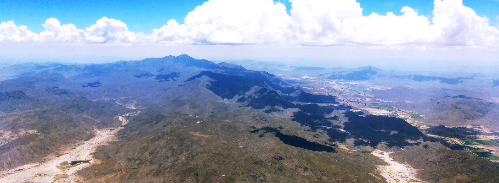
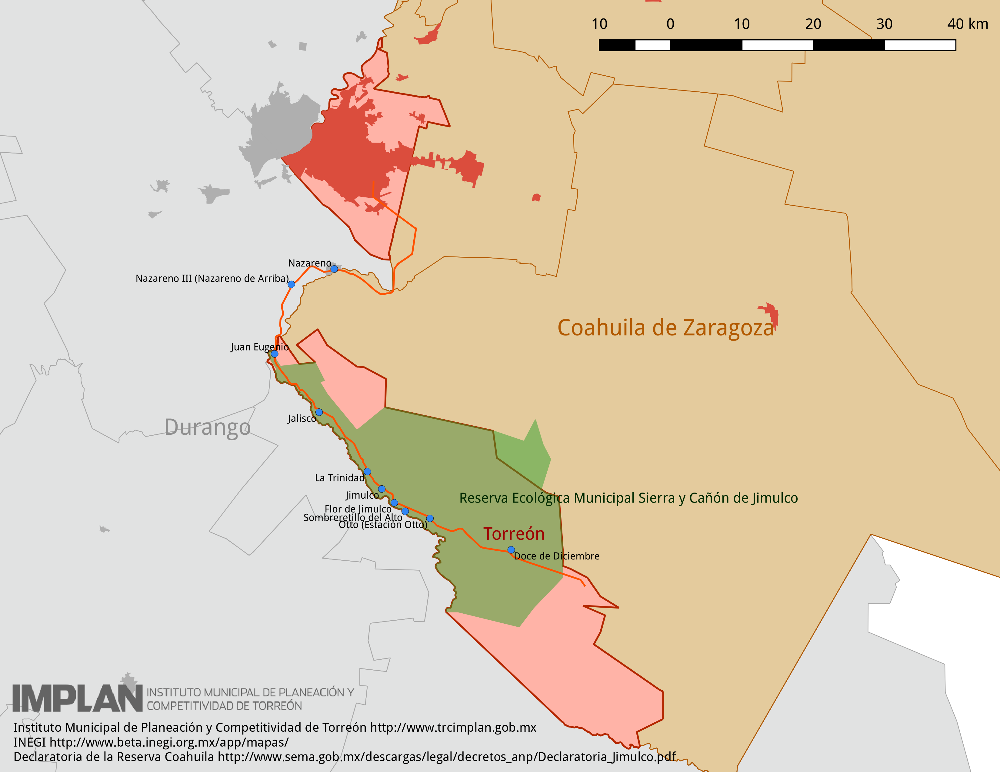

Un dato curioso, no conocido por todos, es que la superficie del municipio de Torreón está formado por dos polígonos no adyacentes, es decir, dos áreas separadas. Una corresponde al área urbana donde se encuentra la ciudad de Torreón y el otra es la rural que conocemos coloquialmente como Jimulco.
La Reserva Ecológica Municipal Sierra y Cañón de Jimulco es un área natural protegida (ANP), la cual fue declarada como tal el 27 de junio de 2003 por el R. Ayuntamiento de Torreón. Con ello se pretende conversar los ecosistemas de la región, además de su historia y cultura propias.
La Reserva Ecológica Municipal tiene una extensión de 60,458.26 hectáreas que representan el 44.74% de la superficie del municipio. En ésta se hallan los ejidos de Juan Eugenio, Jalisco, La Flor de Jimulco y sus anexos Jimulco y La Trinidad, Aplicación de la Flor de Jimulco, Barrial de Guadalupe, La Colonia y Pozo de Calvo.
Geográficamente, el límite Sur está definido por el cauce del río Aguanaval. Además destaca el cerro El Centinela, también llamado "Picacho" con una altura aproximada de 3000 metros sobre el nivel del mar.
La Reserva Ecológica Municipal Sierra y Cañón de Jimulco tiene una gran biodiversidad por los cuatro ecosistemas que posee:
- Bosque de Encino-Pino: Ubicado en las partes más altas de la sierra.
- Matorral Submontano: Rodeando las partes altas de la zona.
- Matorral Xerófilo: Vegetación de características desérticas.
- Bosque de Galería: Que se encuentra en las márgenes del río Aguanaval.
Dentro de la reserva ecológica existen tres zonas de protección:
Zonas de Protección del ANP
- Zona Núcleo de Protección A: Comprende los terrenos de la sierra por encima de los 2200 metros sobre el nivel del mar. Pretende proteger los bosques de encino y pino y las especies que dependen de éstos, como lo son el Agave de Parras (Agave parrasana), el Venado Cola Blanca (Odocoileus virginianus), el Jabalí (Pecari tajacu), el Zorro Moteado (Spilogale gracilis) entre otros.
- Zona Núcleo de Protección B: Se encuentra en el cañón de la Cabeza, siguiendo el curso del río Aguanaval, muy cerca del Ejido Barreal de Guadalupe. En esta zona se protege a una especie de agave muy importante: la Noa (Agave victoriae-reginae) la cual se encuentra en peligro de extinción.
- Zona Núcleo de Protección C: Es la más pequeña de las áreas de protección, alberga a dos especies de cactáceas sumamente importantes e interesantes: La Reina de la Noche (Peniocereus greggii) y el Falso Peyote (Ariocarpues fissuratus)
Zona de Uso Público
Para los visitantes se les recomienda recorrer la Zona de Uso Público que comprende las riberas del río Aguanaval desde el Cañón de la Cabeza en el ejido Barreal de Guadalupe (exceptuando la Zona Núcleo B) hasta el ejido Juan Eugenio.
Son las márgenes del río las que tienen el ecosistema "bosque de galería"; allí se encuentra el árbol más simbólico para nuestro país, el Sabino o Ahuehuete (Taxodium mucronatum) el cual es de gran tamaño y belleza.
Durante la semana santa existe vigilancia y apoyo por parte del Comité de Vigilantes Comunitarios, la Cruz Roja, Protección Civil, el Cuerpo de Bomberos y la Dirección de Seguridad Pública Municipal; esta última mantiene protección permanente en las comunidades.
A todo visitante se le recomienda no encender fogatas, en caso hacerlo, siempre realizarlo con las precauciones debidas. Por supuesto proteger la flora y fauna, no desprendiendo ramas de los árboles, ni extraer plantas o capturar animales nativos. Además recoger siempre la basura que se genere.
Fuera de esta zona, por ejemplo para incursionar en la sierra, se recomienda contratar guías en las comunidades cercanas. Es recomendable solicitar más información a la Fundación Jimulco.
Fundación Jimulco, A.C.
Actualmente esta ANP es administrada por la Fundación Jimulco A.C., que es una organización civil que realiza una gestión ciudadana en estrecha colaboración con los ejidos del área; está integrada por:
- Universidad Autónoma de Coahuila.
- Instituto Tecnológico y de Estudios Superiores de Monterrey.
- Universidad Autónoma Agraria Antonio Narro
- Cámara Nacional de la Industria de la Transformación de Torreón y Gómez Palacio (CANACINTRA).
- Confederación Patronal Mexicana, Delegación Laguna.
- Sierra y Cañón de Jimulco, A.C.
- Biodesert, A.C.
- Pro Defensa del Nazas, A.C.
- Mundo Sustentable, A.C.
Entidades Coahuila de Zaragoza, Durango y el Municipio de Torreón

Reserva Ecológica Municipal Sierra y Cañón de Jimulco con sus localidades y la carretera de la zona de uso público
